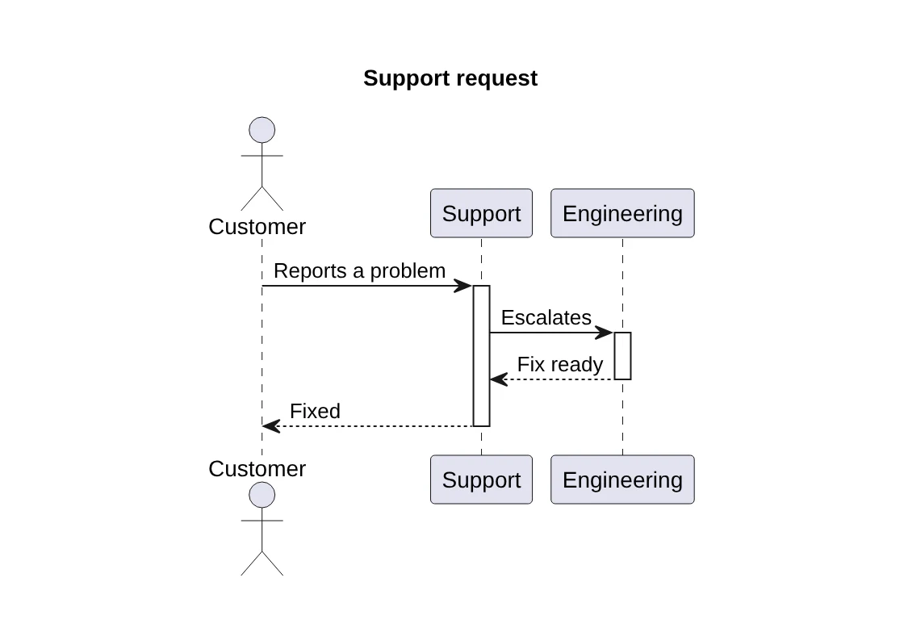
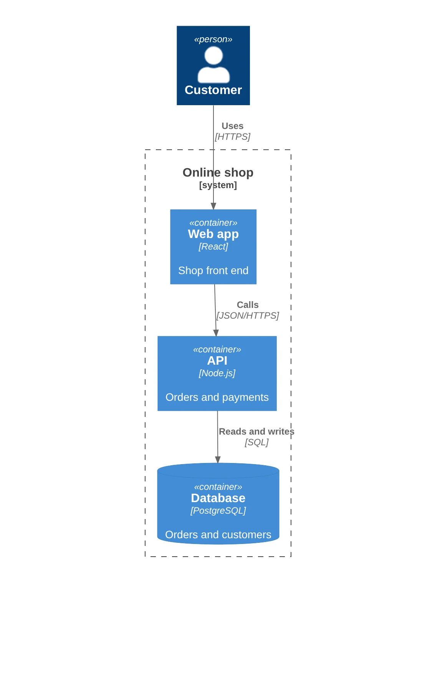
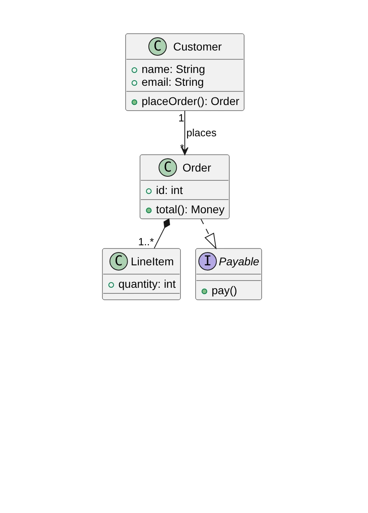
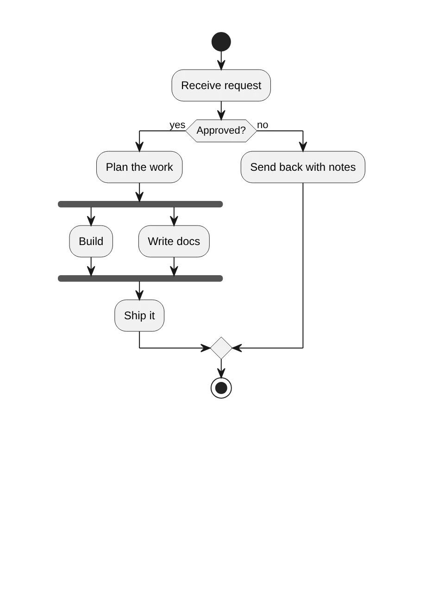

PlantUML Editor · Confluence macro
PlantUML in Confluence, without a PlantUML server.
Write PlantUML next to a live preview. Sequence, class, activity, C4 and more. The diagram is drawn in the browser of the person reading the page, so your diagram text never leaves Atlassian.
Live on the Atlassian Marketplace
Not a Confluence admin? In Confluence, open Apps, then Explore apps, search for PlantUML Editor for Confluence and send a request. Your admin gets an email and can install it.

Type the code, see the diagram
Many PlantUML macros send your diagram text to a PlantUML server to get a picture back. This one has the PlantUML engine inside the app. Nothing to host, nothing to configure, and no server that can be down.

Errors point to the line
A mistake marks the line in the code and says what is wrong in plain words. Click a shape in the preview to jump to its line.
C4 built in
The C4-PlantUML library is included, so !include <C4/C4_Container> works with no setup.
Step back safely
Each save is kept under Versions, so a bad edit is not a lost diagram.
Start from an example
12 examples: sequence, use case, class, activity, component, state, deployment, ER, C4 context, C4 container, Gantt and mind map. Light and dark theme follow Confluence.



Runs on Forge, draws in your browser
The macro runs on Atlassian Forge. The diagram source is saved in the macro on the Confluence page. Version history is kept in Forge app storage in your cloud site. The app does not connect to the internet: includes from a web address are refused with a clear message. Nothing is sent to Dortus.
- Platform
- Atlassian Forge macro
- Source
- In the macro on the page
- Rendering
- PlantUML engine, in the viewer's browser
- Server
- None, no PlantUML server
Live on the Atlassian Marketplace
PlantUML Editor for Confluence is live on the Atlassian Marketplace. It is free and runs on Atlassian. Install it from there into your Confluence site.